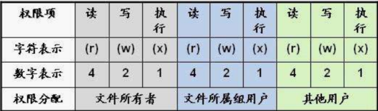
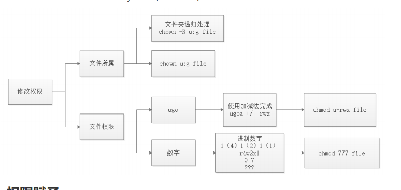

Linux笔记 #
1.常用的命令 #
● whereis 查询命令文件的位置
● file 查看文件的类型
● who 查看当前在线的用户
● whoami 我是谁
● pwd 我在那
● uname -a 查看内核信息
● echo 类似于 sout syso ，打印语句
● clear 清屏
● history 历史
2.万事万物皆文件 #
● 文件系统：
○ 操作系统如何管理文件，内部定义了一些规则或者定义
● 所以在Linux中所有的东西都是以文件的方式进行操作
● 在Linux中，文件的访问不和Window的一样。window依靠的是通过盘符进行访问
● Linux维护着一个树状结构的文件模型
○ 只有一个根节点 ,他的名字叫做 /
○ 一个节点上可以有多个子节点
● 查找文件的方式
○ 相对路径
■ 以当前路径为基准点，查找其他资源
■ vi ../etc/sysconfig/network
○ 绝对路径
■ 以根目录为基准点，查找其他资源
■ vi /etc/sysconfig/network-scripts/ifcfg-ens33
○ 日常使用中，只要找到路径即可，但是如果是一些配置文件，尽量写绝对路径
3.Linux的文件操作 #
-
cd
-
改变当前工作目录
-
-
ls ll
-
显示出指定目录下所有的文件
-
文件的类型
-
-普通文件
-
d文件夹
-
l软连接
-
-
-rw-r–r–. 1 root root 3384 Nov 11 23:51 install.log.syslog
-
-
mkdir
-
创建文件目录
-
mkdir -p a/b/c/d/e/f 会自动创建文件父目录
-
mkdir -p lucky/{1234}ls 一次可以创建多个子目录
-
-
rmdir
-
删除空文件夹
- rmdir: failed to remove ‘a1’: Directory not empty
- rmdir: failed to remove ‘baidu’: Not a directory
-
可以安全的删除文件目录
-
-
cp
-
拷贝文件或者文件目录
-
cp 源文件 目标目录
- cp abcd /opt
- cp /opt/abcd ./
-
拷贝文件夹
- cp -r lucky /opt
- 拷贝文件夹下所有的内容
- cp: omitting directory ‘/root/a1’
-
-
mv
-
移动文件或者文件夹
-
mv a1 /opt
-
mv abc /opt
-
-
-
修改文件名称
- mv a abcd
-
rm
-
删除文件
-
rm install.log
-
rm -f install.log
-
-
删除文件夹
-
rm -r abcd
-
rm -rf abcd 谨慎使用，从删库到跑路
-
-
-
touch
-
如果没有就创建一个文件
-
如果该文件已经存在，修改文件的三个时间，将三个时间改为当前时间
-
-
stat
-
查看文件的状态
-
Inode 当前文件在文件系统的唯一标识，类似于ID
-
时间
-
access 访问时间
-
modify 修改文件内容时间
-
change 修改文件元数据信息时间
-
文件大小 ，文件所有者 ，文件权限
-
对于文件的描述信息
-
-
-
-
ln
-
创建文件的链接
-
软(符号)连接
-
ln -s lucky01 sl
-
软连接和原始文件不是同一个文件
-
lucky1 131085
-
sl 131074
-
-
rm -rf lucky1
-
-
硬链接
-
ln lucky02 hl
-
硬链接和原始文件使用文件系统中的同一个文件
-
如果你害怕一个文件被别人误删，你可以使用硬链接保护这个文件
-
-
软硬链接在链接文件的时候，推荐使用文件的绝对路径,否则有可能会出现问题
-
4.读取文件信息 #
-
cat
-
将整个文档加载到内存中，并进行一次性显示
-
除非后面使用管道，传递数据
-
-
tac
- 将整个文档加载到内存中，并进行一次性按行逆序显示
-
more less
-
分页查看文档内容
-
快捷键
-
回车 下一行
-
空格 下一页
-
b 回退
-
q 退出
-
-
-
head
-
从文章开始读取N行
-
默认如果超过10行读取10行,否则读取现在行数
-
head -5 profile
-
-
tail
-
从文章末尾读取N行
-
head -3 profile | tail -1
- 利用管道只读取第N
- 行管道的作用就相当于把前面的结果以参数的方式传递给后面的命令
-
读取新增数据
-
ping www.baidu.com »baidu
-
tail -F baidu
-
如果f:
-
它会监听指定inode的文件数据变化，但是当文件被删除后
-
即使创新创建，inode也会发生变化，于是监听失败
-
-
如果F
-
他会监听指定名字的文件,如果文件被删除后，重新创建
-
他会重新监听新文件的数据变化，监听不受影响
-
-
-
-
find
-
查找指定的文件
-
find 要查找的范围 -name 名字
-
find /etc -name profile
-
5. VI和vim编辑器 #
5.1 打开文件 #
-
正常打开
- vi profile
-
打开文件，并将光标置于第8行
- vi +8 profile
-
打开最后一行
-
vi + profile
-
按n查找下一个，按N查找上一个
-
-
打开指定搜索单词的位置
- vi +/if profile
5.2 三种模式 #
-
编辑模式
- 编辑模式中，每一个按键都有其他的功能
-
输入模式
- 每一个按键按下什么，就像文本中数据输入什么
-
末行（命令行）模式
- 我们可以直接在VI中输入特定的命令
-
编辑模式–>输入模式
-
i在当前位置插入数据
-
a追加数据
-
o在当前行后面开启一个新的输入行
-
I 行首
-
A 行尾
-
O 上一行
-
-
输入模式–>编辑模式
- 按下ESC
-
编辑模式–>末行模式
- :
-
末行模式–>编辑模式
- 按下ESC
5.3编辑模式 #
- G最后一行
- gg 跳转到第一行
- 数字gg 跳转到第数字行
- w 下个单词
- 数字w
- dw 删除一个单词
- 3dw 删除三个单词
- dd 删除一行
- 3dd 删除三行
- u回退到前面的操作
- .回退u执行的操作
- yw 复制一个单词
- 3yw 复制三个单词
- yy 复制一行
- 3yy复制三行
- p粘贴
- 6p 粘贴6次
- x 剪切
- 3x 剪切三个字符r 替换，然后输入一个字符替换
- 3r 替换三个
- hjkl 方向键
- ZZ 保存并退出
- ctrl+s 锁屏 ctrl+q 解锁
5.4 输入模式 #
- 按啥是啥
5.5 末行模式 #
-
set nu 设置行号
-
set nonu 取消行号
-
w 保存
-
q 退出
-
wq 保存并退出
-
q!强制退出，但是不保存
-
如果上次异常退出会保留同名隐藏文件，每次启动会给与提示
- 如果确定当前文件没问题，请删除隐藏文件
-
/pattern
-
搜索指定的字符串
-
/usr n向下查找 N逆向查找
-
-
s/p1/p2/g
-
替换字符串
-
g 替换当前行所有 否则只替换当前行第一个
- s/abc/lucky/g
-
查找指定行
- 3,8s/abc/lucky/g
-
替换全文
- g/abc/s//lucky/g
-
6.文件大小 #
-
分区信息
- df -h
-
指定文件目录大小
- du -h –max-depth=1 apache-tomcat-7.0.61
-
swap
- 一个特殊分区，以硬盘代替内存
- 当内存使用满的时候，可以将一部分数据写出到swap分区
7.文件压缩 #
7.1 tar #
-
主要针对的文件是 lucky.tar.gz
-
解压缩
- tar -zx(解压)v(过程)f(文件) lucky.tar.gz
-
压缩
-
tar -zc(压缩)f(文件) tomcat.tar.gz(压缩后的名字) apache-tomcat-7.0.61(源文件)
-
tar -zxf tomcat.tar.gz -C /opt/
- -C 指定解压缩的文件目录
-
7.2 zip 和 unzip #
- 安装
- yum install zip unzip -y
- 压缩
- zip -r tomcat.zip apache-tomcat-7.0.61
- 解压缩
- unzip tomcat.zip
8. 用户-组-权限 #
8.1 用户 #
-
新增用户
- useradd luckyboy
- 会创建同名的组和家目录
-
设置密码
- passwd luckyboy
-
删除用户
- userdel -r luckyboy
- 级联删除家目录和组
-
修改用户信息
- usermod -l luckyss luckyls 修改用户名
- 家目录和组名称是不会被修改的
- usermod -L luckyss 锁定用户名
- usermod -U luckyss 解锁用户名
- usermod -l luckyss luckyls 修改用户名
-
常用文件
- cat /etc/shadow
- 用户名和密码
- cat /etc/passwd
- 用户名，编号,组编号,家目录，命令，目录
- 6.5系统0-499 普通 500+
- 7.6系统0-999 普通 1000+
- cat /etc/shadow
-
切换账户
- su luckyboy
8.2 组 #
- 创建组
- groupadd lucky
- 删除组
- groupdel lucky
- 修改组名字
- groupmod -n school lucky
- 查看用户对应的组
- groups
- groups schoolboy
- 当我们创建用户的时候，会默认创建一个同名的主组
- 修改用户的组
- usermod -g lucky schoolboy (主组)
- usermod -G lucky schoolls (附属组)
8.3 权限 #

- 查看文件的权限
- drw-r-xr-x 9 n1 m1 4096 Nov 13 00:30 apache-tomcat-7.0.61
- 三组权限，每组3个字母
- r :读取权限
- w :写入权限
- x :执行权限
- -:没有权限
- root :所属用户(属主)
- root：所属的组（属组）
- 权限的UGO模型
- 三组权限
- 属主的权限：属组的权限：其他的权限
- 所有说：将来修改文件的权限 可以从rwx和ugo两个方面进行修改
- 修改文件的权限
- 修改文件所属
- chown n1 /var/lucky1
- chown n1:m1 /var/lucky2
- 修改文件夹时，让子目录迭代修改
- chown -R n1:m1 school
- chgrp m2 lucky3
- 当用户的组被修改之后，需要重新登录才能获取新组的权限
- 修改文件的rwx
- chmod o+w lucky4
- chmod ug+rw lucky4
- chmod ugo-rw lucky4
- （权限RWX分别对应数字 4 2 1 5= 4+0+1 r-x）
- chmod 664 lucky4 ->(rw- rw-r–)
- 修改文件所属

8.4 权限赋予 #
- 我们可以将管理用的权限分配给普通用户
- 文件位置在 vim /etc/sudoers
- 但是修改这个文件需要使用命令
- visudo
- 修改 Line 99
- n1 ALL=(root) /sbin/useradd
- n1 ALL=(root) /sbin/*
- 如何使用
- su n1
- sudo chkconfig iptables off
9 管道与重定向 #
9.1 管道 #
- 将前面命令的结果作为参数传递给后面的命令
- grep
- 强大的文本搜索工具
- cat profile | grep if
- ls / | grep ^t
9.2 重定向 #
- 改变数据输出的位置，方向
- 0 in 1 out 2 err
- ls / 1> lucky 标准输出
- ls / > lucky 标准输出
- ls abcd 2>lucky 错误输出
- > 替换 » 追加
- ls / 1» lucky
- ls / 1> lucky
- 结合使用
- ls /etc /abc > lucky 2>&1
- ls /etc /abc » lucky 2>&1
- 信息黑洞
- ls /etc /abc » /dev/null 2>&1